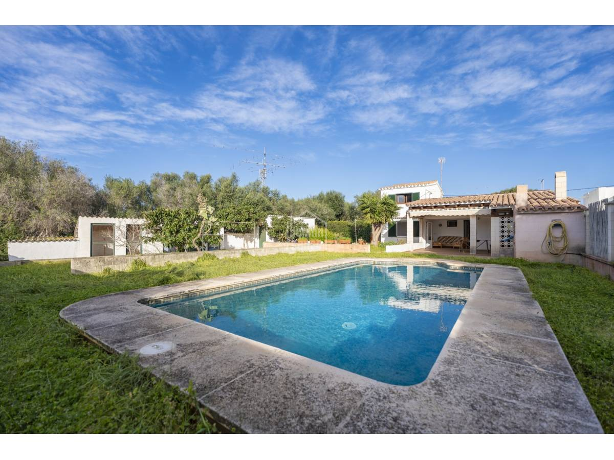

€655.000
Trebaluger, Es Castell, Menorca
Open the listingCozy outdoor-living bargain under €700k: warm open-plan living, large covered terrace with barbecue and wood-fired oven, garden and a built private pool on a quiet Trebaluger street. Habitable now with real character — punches above typical island pool-villa pricing.
Opened 4 Sep 2026. Asking 655.000 €. Icons: 5 bed / 1 bath / 135 m² built / 786 m² plot + swimming pool. Copy: perfect condition to move into; upper multipurpose room. Distinct from board trebaluger / trebaluger-93361. Not POR.